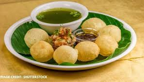
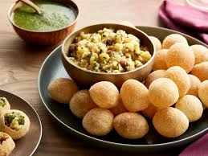
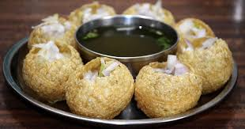

GIVE ME A PLATE OF PANIPURI!!!


INGREDIENTS:
- 1 cup sooji / semolina / rava
- 2 tbsp maida / plain flour / all purpose flour / refined flour
- pinch of baking soda
- ¼ tsp salt
- 2 tsp oil
- ¼ cup water, or as required
- oil for deep frying
It is the most common and popular indian street food recipe
made with small puris filled with spiced and mashed
aloo and spiced water
INSTRUCTIONS
firstly, in a large mixing bowl take 1 cup sooji and 2 tbsp maida
also add pinch of baking soda, ¼ tsp salt and 1 tsp oil.
combine all the ingredients well.
further add ¼ cup water and start to knead.
knead to smooth and soft adding more water if required.
grease the dough with oil. cover and rest for 20 minutes or untill the rava absorbs moisture.
now knead the dough again making sure the dough is stiff absorbing moisture.
divide the dough into half and dust with maida.
furthermore, roll the dough as thin as possible using a rolling pin.
take a small cup and start to make small puris.
drop the prepared puri and press with the spoon to puff up.
once they puff, it will automatically turn over. if not, once the bottom side is golden brown, turn over the puri.
and fry the puri till golden brown and crisp.
remove the puri and drain over tissue paper to remove excess oil.
finally, golgappa puri is ready to prepare pani puri or bhel puri.